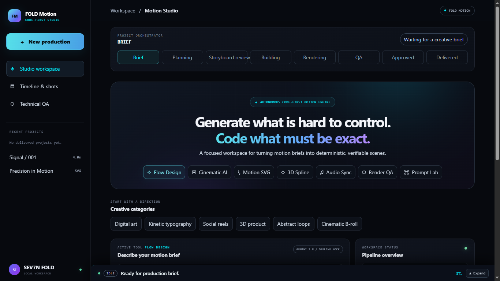
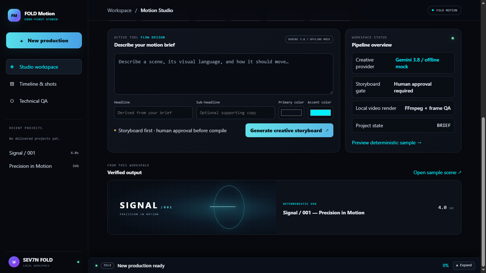
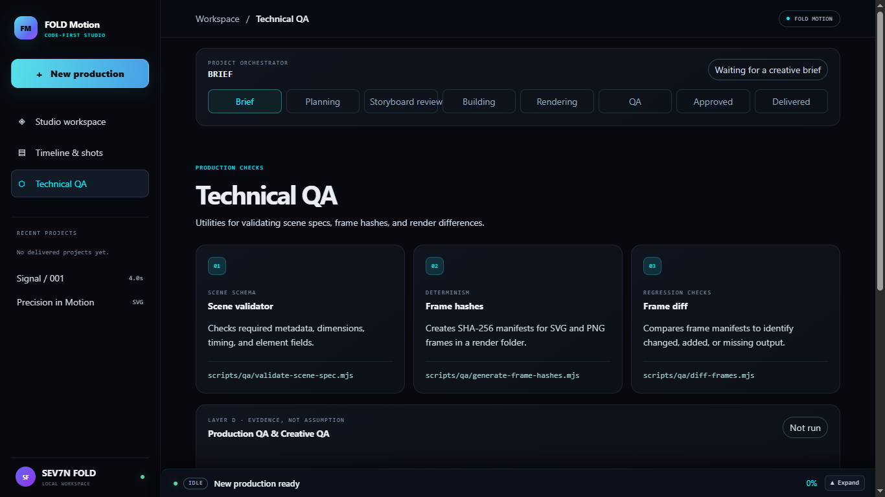

BRIEF
Understand the product, audience, objective, identity, and intended outcome.
SEV7N FOLD / CREATIVE TECHNOLOGY
Creativity at scale.
FOLD MOTION is SEV7N FOLD’s AI-assisted cinematic production system. Human creative direction, structured storytelling, and generative technology work together to make visual production more intentional and repeatable.

A production workspace structured around the creative brief, with clear stages from planning through delivery.
AI tools have made visual production more accessible, but individual generations can drift: characters change, product details shift, logos distort, and striking shots fail to become a coherent story.
FOLD MOTION is being developed to add the structure, consistency, and creative control that generative production needs.
Understand the product, audience, objective, identity, and intended outcome.
Set the concept, visual language, mood, lighting, and storytelling approach.
Shape scenes, shots, transitions, and narrative sequence before production.
Establish references, product continuity, and the intended final appearance.
Develop cinematic sequences with generative tools under human creative direction.
Review consistency, motion, pacing, composition, sound, and final output.

A structured starting point for the idea, visual language, headline, and color direction.
Storytelling and artistic judgment remain intentional.
AI reduces production friction and expands what a small team can create.
Typography, logos, layouts, and brand details stay under controlled design and editing.

The interface outlines quality checks for scene metadata, frame hashes, and render differences.
The supplied screens show a workspace prototype. They identify Gemini 3.8 as an offline mock provider, require human storyboard approval, and list local video render with FFmpeg plus frame QA. The screenshots show the project waiting for a creative brief, with QA not run. This page describes the intended production system and does not claim that a completed production or live AI integration is shown.
FOLD MOTION / SEV7N FOLD